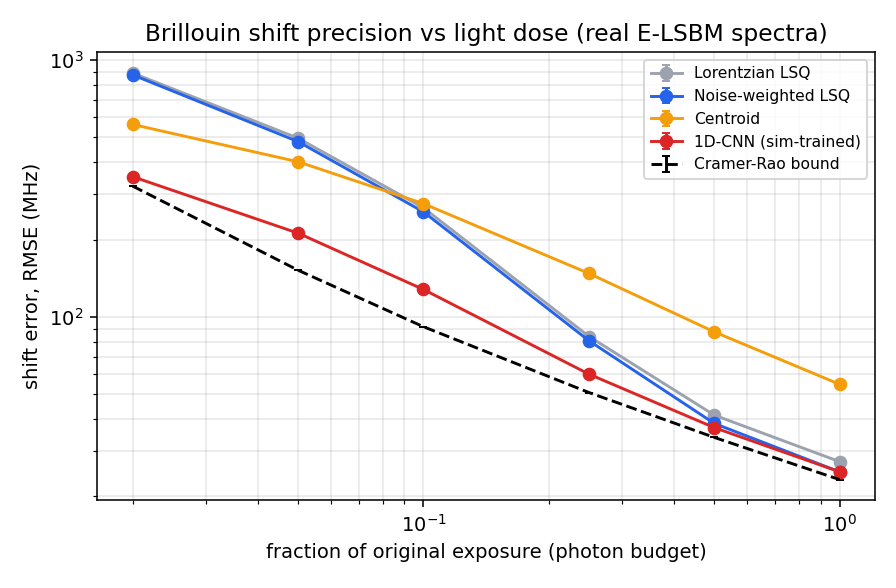
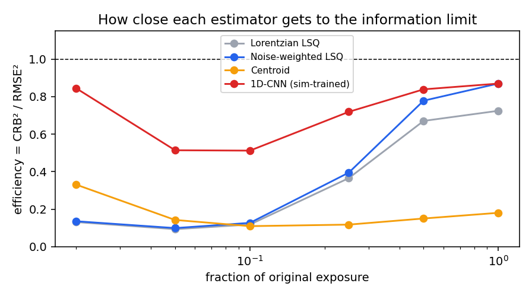
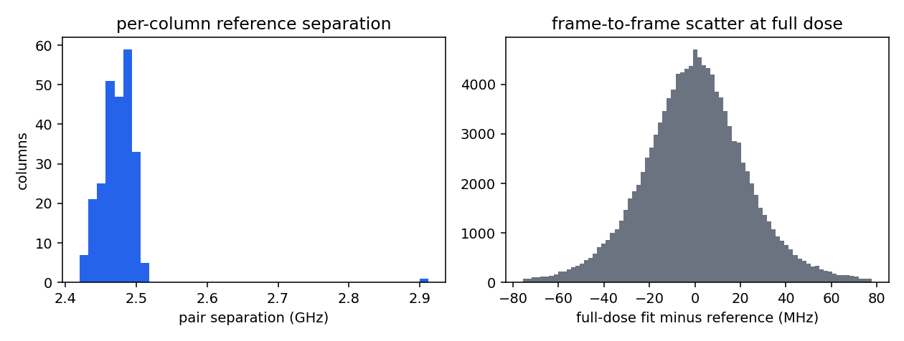

Headline
0.87efficiency of the standard noise-weighted fit at full light: already near-optimal
0.13 vs 0.51efficiency at 10% light: weighted fit vs sim-trained CNN
1.7×less light for the CNN to reach the weighted fit's 128 MHz error
23% vs 0.6%fits vs CNN missing by more than 1 GHz at 2% light
2.5 µsCNN time per spectrum (fit: 27 µs on the same GPU)
495 raw frames→measured camera noise→dose reduced to 2%→4 estimators→vs Cramér-Rao bound
Limits, stated plainly:
- On median error the gap is small at 10% light (57 vs 59 MHz). The CNN's main gain is robustness: it avoids catastrophic misfits.
- Low-light spectra are real line shapes with added simulated noise, not new recordings.
- One instrument, one agar sample. Cells and tissue are untested.
Shift error (RMSE, MHz)
| Light dose | Cramér-Rao bound | 1D-CNN (sim-trained) | Noise-weighted LSQ | Lorentzian LSQ | Centroid |
|---|---|---|---|---|---|
| 100% | 23.2 | 24.9 | 24.9 | 27.3 | 54.6 |
| 50% | 33.9 | 37.0 | 38.4 | 41.4 | 87.4 |
| 25% | 50.7 | 59.8 | 80.7 | 83.8 | 147.5 |
| 10% | 91.5 | 127.8 | 256.3 | 265.8 | 275.9 |
| 5% | 151.8 | 211.7 | 481.0 | 495.9 | 401.6 |
| 2% | 323.0 | 351.5 | 875.5 | 890.1 | 561.3 |
Figures


